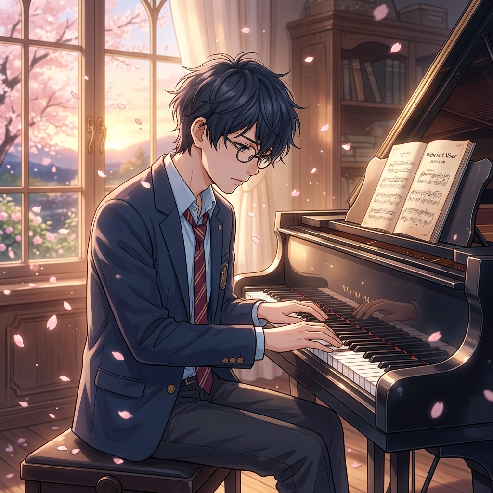
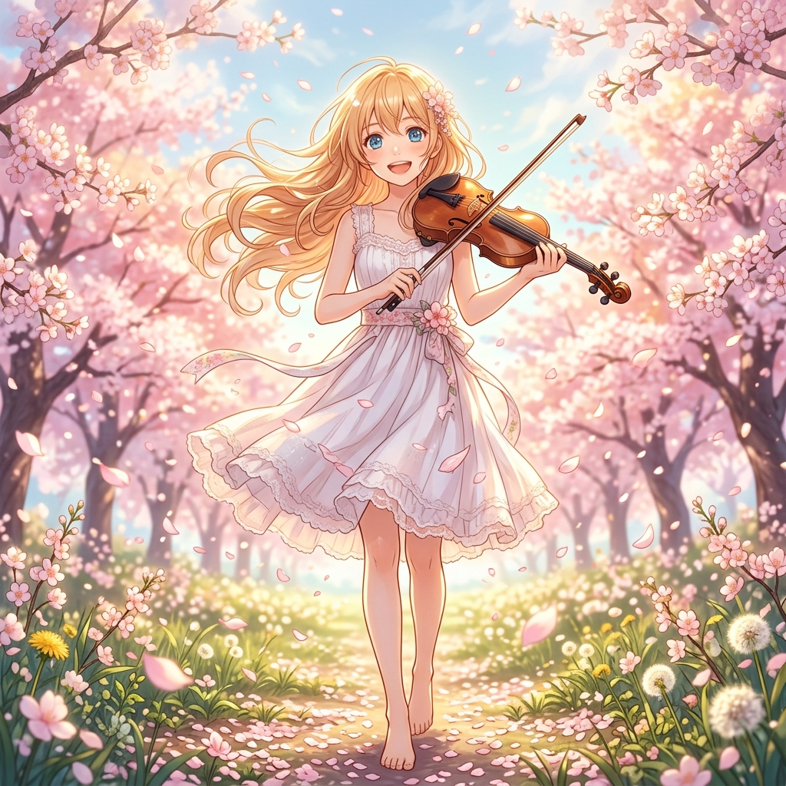
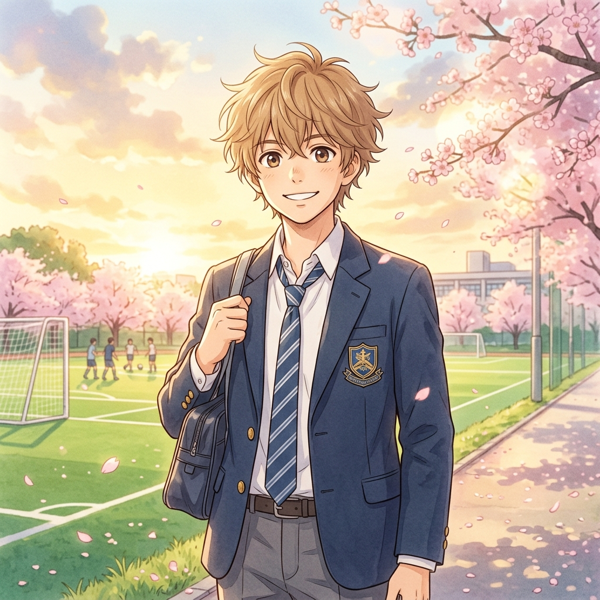

Life is like a piano.
The white keys represent happiness, the black keys show sadness.
But as you go through life's journey, remember that the black keys also make music.
Spring, the season I met you, is coming.
A story of music, love, and fleeting moments
“Did it reach her… my music?”
Life is like a piano.
The white keys represent happiness, the black keys show sadness.
But as you go through life's journey, remember that the black keys also make music.
Spring, the season I met you, is coming.

The Human Metronome
"A piano isn't something you play with your hands. You play it with your heart."

The Bright Light
"Whether you're sad, you're a mess, or you've hit rock bottom, you still have to play!"
The Steady Anchor
"Even though I'm bitter over losing, even though I'm depressed... I still want to throw the ball."

The Loyal Star
"It's only natural for the girl you like to be in love with someone else."
The final performance...
"Was I able to live inside your heart?"
How grief silences color and sound.
The beauty of fleeting moments.
Dear Kousei Arima,
It feels weird writing a letter to someone you were just with...
Thank you.
We'll meet again in spring.
A spring without you is coming.
Thank you for being in my life.